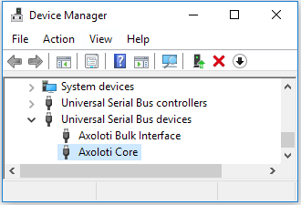
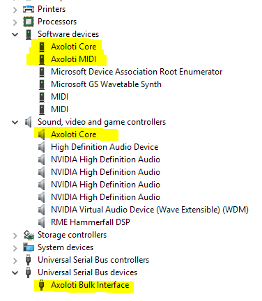

Do i have to do something with zadig to make my axoloti to appear as a class compliant midi device ?
No, the class compliant midi device is plug and play.
But if you did install the WinUSB driver on the "Axoloti Core (Interface 0)" (list all devices in Zadig...) then Windows will not detect a MIDI port anymore.
"Axoloti Core (Interface 0)" should use the "usbaudio" driver,
"Axoloti Bulk Interface (Interface 2)" should use the "WINUSB" driver.
If you have replaced the driver for "Axoloti Core (Interface 0)" with "WinUSB", this can be fixed by going to the Windows device manager, you will find "Axoloti Core" in "Universal Serial Bus devices"

The "Axoloti Bulk Interface" is fine there, but the "Axoloti Core" does not belong in the "Universal Serial Bus devices" category. To fix this, right-click on the "Axoloti Core" device, and select "uninstall". Check "Delete the driver software for this device" when asked and press OK. Now unplug your Axoloti Core from the USB port, and plug it in again, no need to reboot.
After that, Axoloti Core will show up in the Windows device manager here:

And all software should detect now the Axoloti MIDI port.

 well where have I been?
well where have I been?